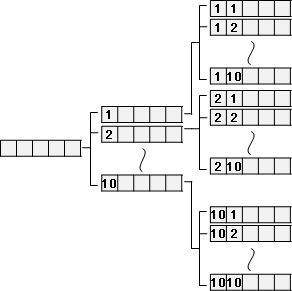
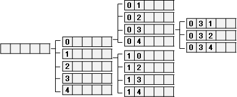
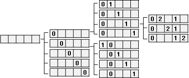
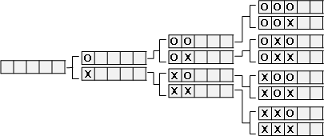
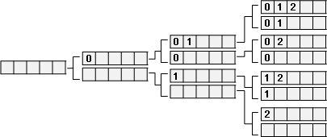
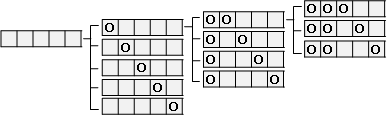
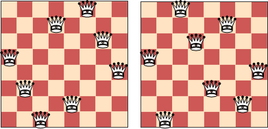
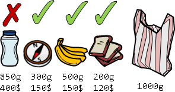
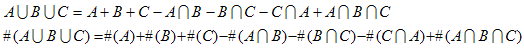
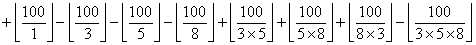

Backtracking
手把青秧插滿田，低頭便見水中天，
六根清淨方為道，退步原來是向前。《插秧詩》
Backtracking
中文稱作「回溯法」，枚舉多維度數值的方法。運用遞迴依序窮舉各個維度的數值，製作所有可能的多維度數值，並且在遞迴途中避免枚舉不正確的多維度數值。
當多維度數值只需要唯一一組，可以讓程式提早結束。
當多維度數值可以衡量優劣，就隨時剔除劣的、保留優的。
回溯法的特色是隨時避免枚舉不正確的數值。一旦發現不正確的數值，就不遞迴至下一層，而是回溯至上一層，節省時間。
另外還可以調整維度先後順序、一個維度裡面的枚舉順序。如果安排得宜，可以更快找到正確的多維度數值。
UVa 140 165 193 222 259 291 301 331 399 435 524 539 565 574 598 628 656 732 10186 10344 10364 10400 10419 10447 10501 10503 10513 10582 10605 10624 10637 129 10160 10802
Enumerate Tuples
© 2010 tkcn . All rights reserved.
| ? | ? | ? | ? | ? |
Tuple
即是「多維度數值」。
例如數字 1 、 2 、 3 構成的三維數值是 {1,1,1} 、 {1,1,2} 、 {1,1,3} 、 {1,2,1} 、 {1,2,2} 、 {1,2,3} 、 …… 、 {3,3,2} 、 {3,3,3} 。
範例：枚舉「數字 1 到 10 選擇五次」全部可能的情形
製作一個陣列，用來存放一組可能的情形。陣列中不同的格子，就是不同的維度。
例如 solution[0] = 4 表示第一個抓到的數字是 4 ， solution[4] = 9 表示第五個抓到的數字是 9 。
一般來說，重複很多次的程式碼，都會用迴圈進行簡化。
Enumerate Permutations
Permutation
便是數學課本中「排列組合」的「排列」。但是這裡不是要計算排列有多少種，而是枚舉所有的排列，以字典順序枚舉。
例如 {1,2,3} 所有的排列就是 {1,2,3} 、 {1,3,2} 、 {2,1,3} 、 {2,3,1} 、 {3,1,2} 、 {3,2,1} 。
範例：枚舉 {0,1,2,3,4} 所有排列
依序枚舉每個位置。針對每個位置，試著填入各種數字。
一般來說，重複很多次的程式碼，都會用迴圈進行簡化。
範例：枚舉 {0,1,2,3,4} 所有排列
依序枚舉每個數字。針對每個數字，試著填入各個位置。
範例：枚舉 abc 所有排列
這跟先前範例大同小異，程式碼稍做修改即可。
範例：枚舉 abb 所有排列，避免重複排列。
答案應該為 abb 、 aba 、 baa 。然而使用剛剛的程式碼，答案卻是這樣：
abb abb bab bba bab bba
這跟預期的不一樣。會有這種結果，是由於之前的程式有個基本假設：字串中的每個字母都不一樣。儘管出現了一樣的字母，但是程式還是當作不一樣的字母，依舊列出所有可能的排列，導致有些排列重複出現。
想要避免產生重複排列，在枚舉某一個位置的字母時，避免重複填入一樣的字母。若將輸入的字串由小到大排序，字母會依照順序出現，所以只需檢查方才填入的字母，判斷一不一樣，就可以避免填入一樣的字母了。
當字母重覆出現次數很多次，此時可以使用 128 格的陣列，每一格分別存入 128 個 ASCII 字元的出現次數，簡化程式碼。
Enumerate Combinations
Combination （ Subset ）
便是數學課本中「排列組合」的「組合」；概念等於「子集合」。但是這裡不是要計算組合有多少種，而是枚舉所有的組合，以字典順序枚舉。
例如 {1,2,3} 所有的組合就是 {} 、 {1} 、 {2} 、 {3} 、 {1,2} 、 {1,3} 、 {2,3} 、 {1,2,3} 。
範例：枚舉 {0,1,2,3,4} 所有組合
該如何枚舉呢？先觀察平時我們計算組合個數的方法。
{0,1,2,3,4} 所有組合個數總共 2⁵ 個： 0 可取可不取，有兩種情形、 1 可取可不取，有兩種情形、 ... 、 4 可取可不取，有兩種情形。根據乘法原理，總共 2×2×2×2×2 = 2⁵ 種情形。
枚舉方式可以仿照乘法原理。建立一個陣列，當作一個集合。 solution[i] = true 表示這個集合擁有第 i 個元素，觀念等同「 Set 資料結構 : 索引儲存」。
依序枚舉每個位置。針對每個位置，試著填入取或不取。
亦得改用其他資料結構，例如「 Set 資料結構 : 循序儲存」。
範例：枚舉 {0,1,2,3,4} 所有組合
依序枚舉每個選取。針對每個選取，試著填入各個位置。
範例：枚舉 {6,7,9,4,2} 所有組合
預先排序數字，輸出結果就會照字典順序排列。
Enumerate Subset Sums
Subset Sum
例如 {1,2,8} 所有的子集和就是 0 、 1 、 2 、 8 、 1+2 、 1+8 、 2+8 、 1+2+8 。
直覺的解法是枚舉所有子集合，分別求總和，最後再排序。
可以直接由小到大枚舉嗎？可以！運用即時排序資料結構，調整回溯法的枚舉順序。每個數字都有「取」和「不取」兩種選擇，放入即時排序資料結構，由即時排序資料結構決定下一個枚舉的對象。
簡單起見，假設數字都是正數。首先是簡單的做法，但是有錯誤，出現多餘的零。
再來是正確的做法。稍作改良，避免多餘的零。
8 Queen Problem
八皇后問題
問題：在 8x8 的西洋棋棋盤上擺放八隻皇后，讓他們恰好無法互相攻擊對方。皇后的攻擊範圍是米字。
一個非常簡單的想法：每一格都有「放」和「不放」兩種選擇，枚舉所有可能，並避免枚舉皇后互相攻擊的情形。建立 8x8 的 bool 陣列，代表一個 8x8 的棋盤盤面情形。例如 solution[0][0] = true 表示 (0,0) 這個位置有放置皇后。
接著要避免枚舉不可能出現的答案：任一直線、橫線、左右斜線上面只能有一隻皇后。分別建立四個 bool 陣列，記錄皇后在各條線上擺放的情形。
以及避免枚舉不可能出現的答案：最終的棋盤上面不足八隻皇后。
改進
由於一條線必須剛好擺放一隻皇后，故可以以線為單位來遞迴窮舉。重新建立一條一維 int 陣列， solution[0] = 5 表示第零個直行上的皇后，擺在第五個位置。
縮成迴圈是一定要的啦！
接著要避免枚舉不可能出現的答案。
改進
8 Queen Problem 的答案是上下、左右、對角線對稱的。排除對稱的情形，可以節省枚舉的時間。這裡不加贅述。
另一種左右斜線判斷方式
比用陣列記錄還麻煩。自行斟酌。
0/1 Knapsack Problem
0/1 背包問題
問題：各式各樣的物品，重量與價值皆異。一個背包，具有耐重限制。現在將物品儘量塞入背包，令背包裡物品總價值最高。
一個簡單的想法：每個物品都有「要」和「不要」兩種選擇，窮舉所有可能，並避免枚舉背包超載的情形。建立一維 bool 陣列， solution[0] = true 表示第零個物品有放進背包。
檢查背包超載的部分可以修改成更美觀的樣子。
各位可以預先排序物品重量，再執行程式，看看效率有何不同。然後嘗試使用 heuristic bound 加快速度。
Inclusion-Exclusion Principle
排容原理
類似於枚舉所有子集合，但是每個子集合有正負號之別 ── 奇數個集合的交集為正號、偶數個集合的交集為負號。
舉例：求出 1 到 100 當中不可被 3 或 5 或 8 整除的整數有幾個。 3 、 5 、 8 均兩兩互質。
考慮數字之間不互質的一般情形：
枚舉子集合（組合）有兩種枚舉方式，排容原理亦有兩種枚舉方式。
UVa 10325
Euclidean Shortest Path
© 2010 tkcn . All rights reserved.
二維座標平面，兩點之間的最短路徑
在一張地圖上有很多個地點，鄰近的地點有筆直道路相通，我們也知道每一段道路的長度。現在要沿著道路，從一個地點走到另一個地點，請問要怎麼走距離最短呢？
一條最短的路徑，肯定不會繞圈子。我們可以窮舉所有排列，製造所有可能的路徑。每當生成一條路徑，就判斷這條路徑是不是歷來最短的路徑，並且隨時記得歷來最短的路徑。
prune 的程式碼，可以放在遞迴函式一開始的地方，也可以放在遞迴函式呼叫的前一刻。視情況選用直觀易懂的寫法。
很多人誤認 backtracking 就是圖論中的 DFS ，然而兩者沒有關係。兩者相似的地方是： backtracking 遇到不合理的解答會馬上回溯， DFS 遇到拜訪過的節點會馬上回溯。
Bounding
遞迴過程中，如果當下產生的路徑片段，已經超過歷來最短的路徑長度，則可以馬上回溯。堅持遞迴下去，路徑片段只會越變越長，將來仍然是超過歷來最短的路徑長度，根本不可能構成正確解答 ── 不如當下就回溯，及早發現及早治療。
Heuristic Bounding
遞迴過程中，如果當下產生的片段路徑，我們預測它延伸到終點之後，鐵定超過歷來最短的路徑長度，則可以馬上回溯。先知先覺，防範未然，少走許多冤枉路。
這個問題可以套用最短路徑演算法，甚至可以使用 A* 、 IDA* 解決。不過這已經超出回溯法的範圍了。